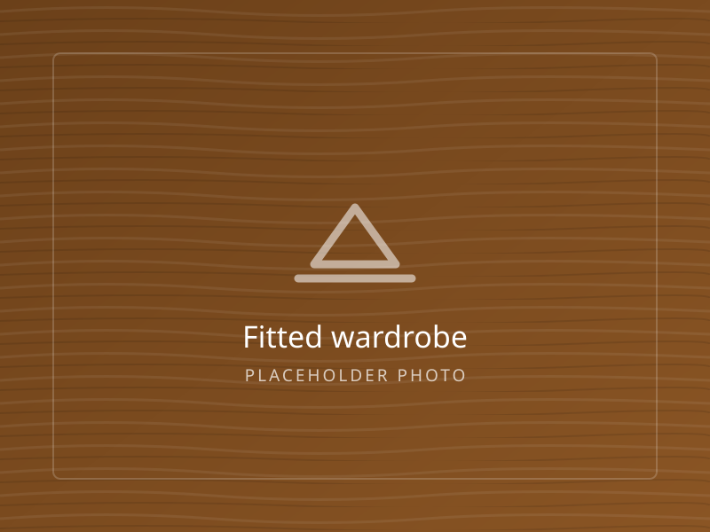
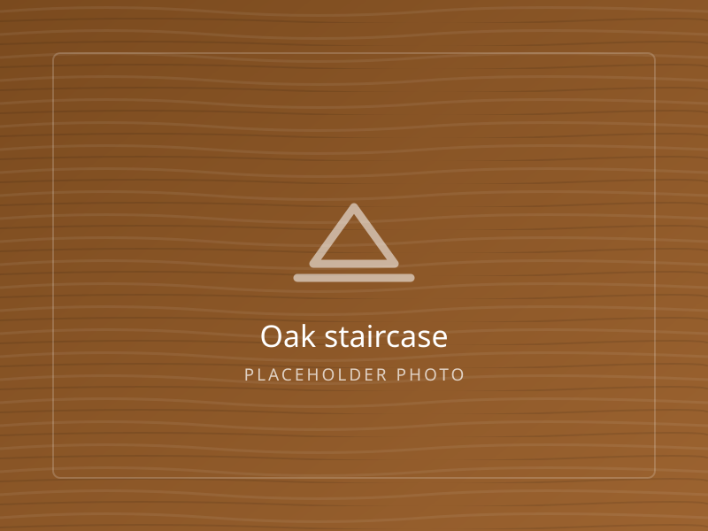
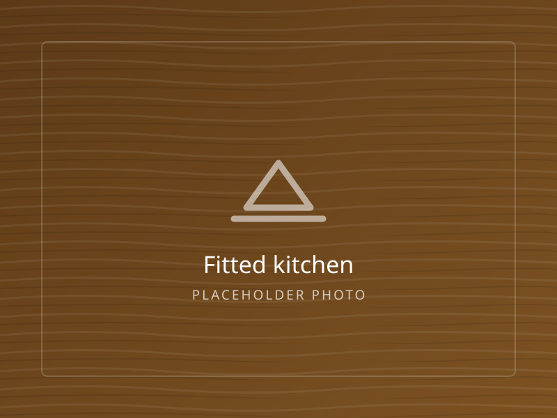
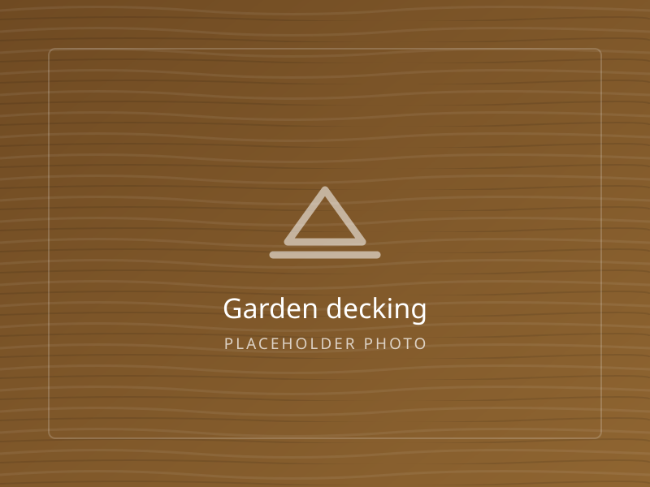
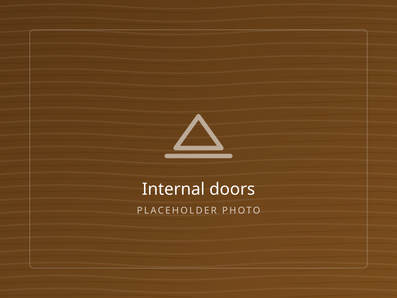
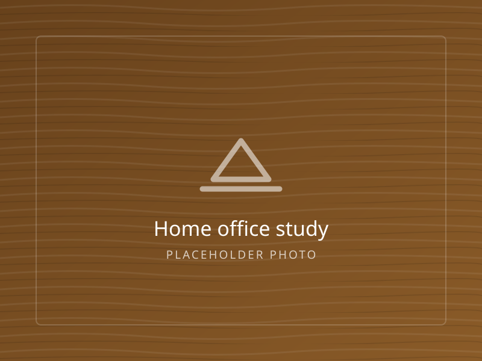
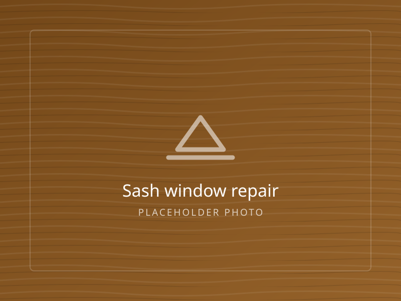
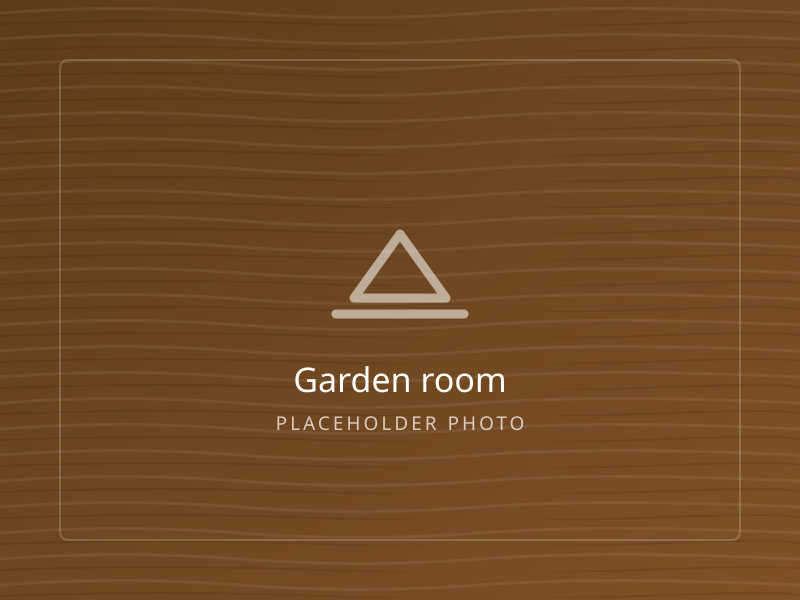
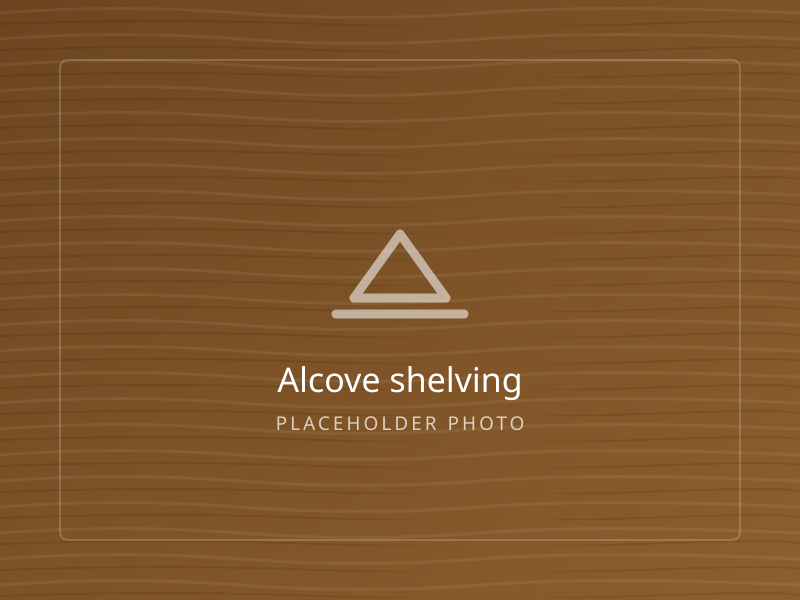

Our work
Recent jobs
A cross-section of what Sam has been building lately. Every photograph is a job he measured, made and fitted himself.









More photographs are available on request, and Sam is happy to put you in touch with recent customers in your area.
Seen something you like?
Send over the reference and your measurements and Sam will tell you what a similar job would cost in your house.